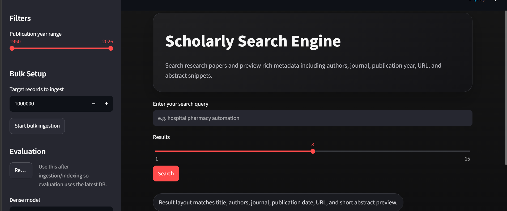

01 / DATA↗Information Retreival · 2026Scholorly Search Engine
An AI-powered scholarly search engine combining keyword and semantic search for academic papers. Uses Qdrant and SQLite with a RAG pipeline to generate concise LLM-powered paper summaries.
PythonStreamlitRAGGen AI
CASE STUDYGitHub ↗